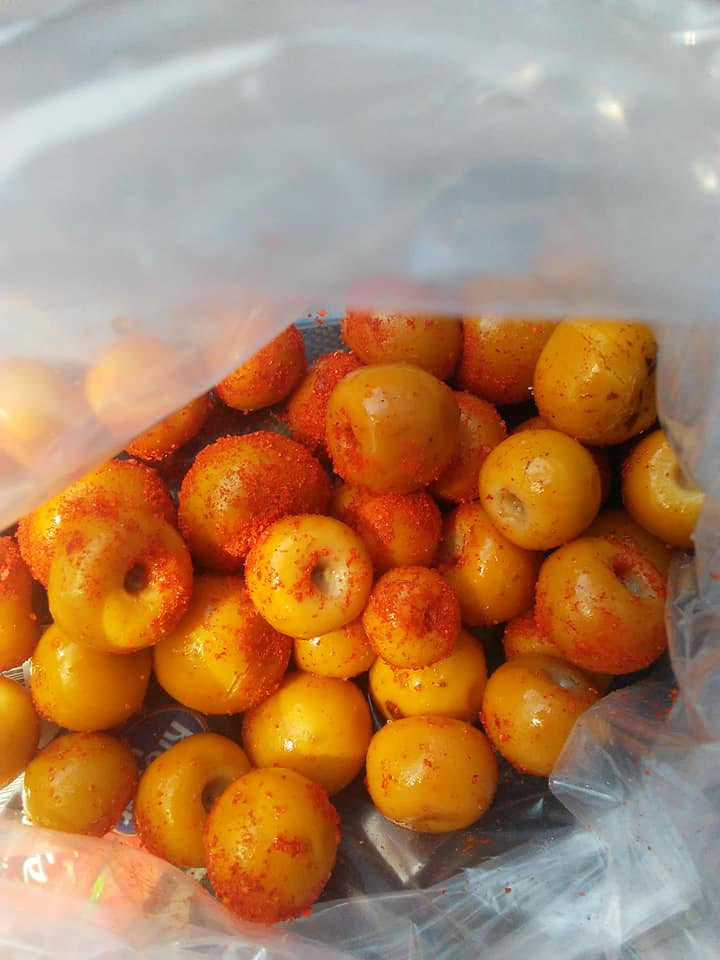
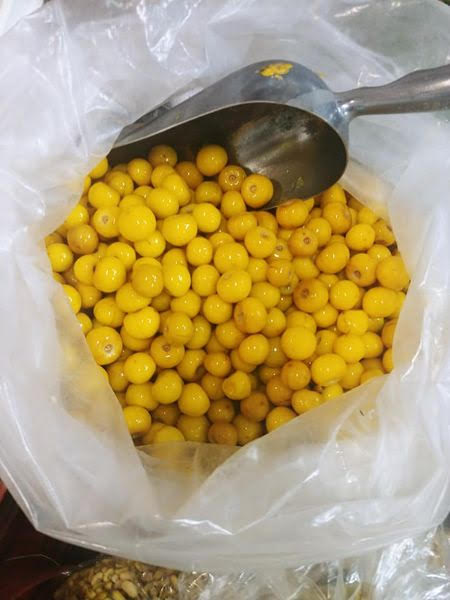

La Fruta Nanche o Nance Proviene De Guerrero En Mexico.Esta Fruta Tiene Un Sabor Dulce,Es Una De Las Frutas Mas Vendidas En Nuestros Locales. (Es De Temporada).

El Nanche Contiene Mucha Vitamina C Y Tambien Contiene Vitamina A.

Este Es El Nanche Solo Sin Nada De Chile.
El Chile Que Esta Con El Nanche Tambien Lo Tenemos.Le Puedes Poner Chile De Arbol,Chamoy Y (Un chile)
Si Te Gustaria Saber Mas Informacion Sobre Nanche,Nance,Nanchi O Changunga Visita Este Sitio Web